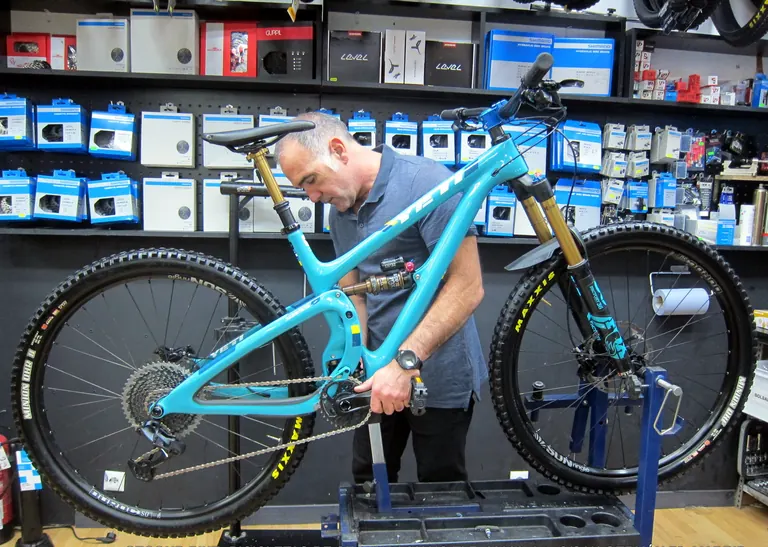
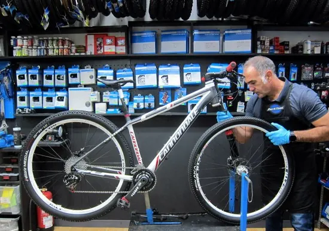
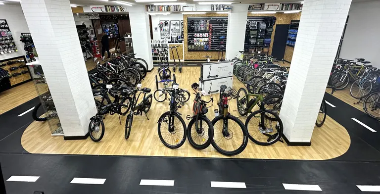
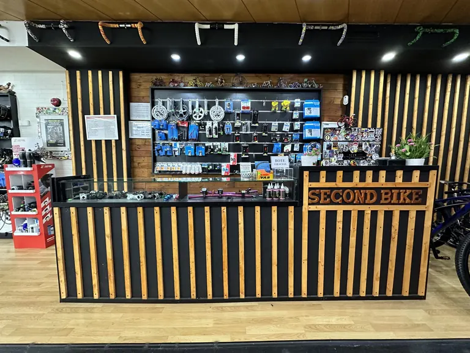
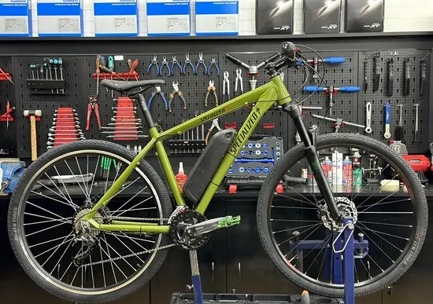
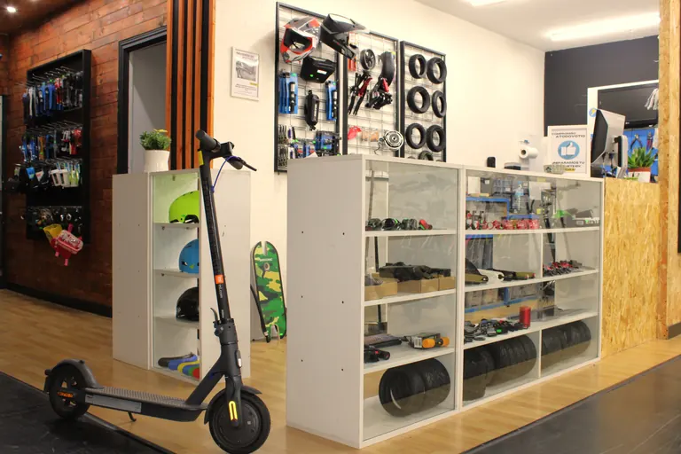
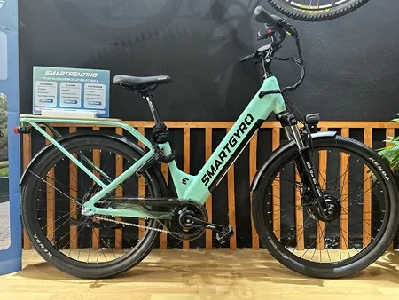
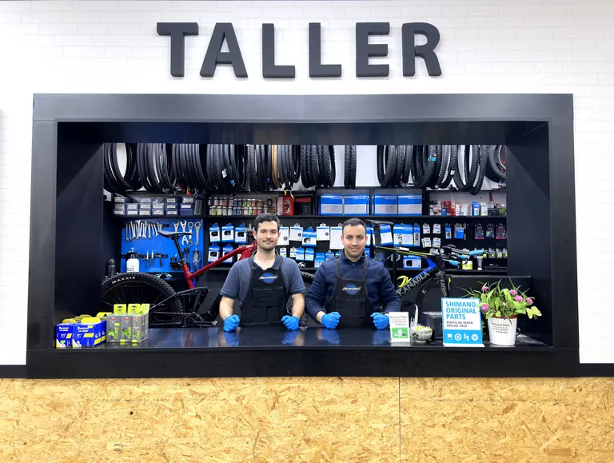
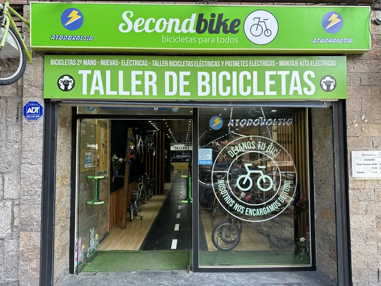

Taller y tienda de bicis de segunda mano en Madrid
Reparamos tu bici sin cita previa y vendemos bicis revisadas con garantía, que puedes probar en nuestro carril.
Servicios
Todo lo que tu bici necesita, en el mismo taller.
-

Reparación de bicicletas
Reparamos todo tipo de bicicletas, de urbanas a montaña y carretera, con herramientas profesionales y repuestos de primera calidad.
- Sin cita previa
- Garantía de 3 meses por escrito
-

Revisiones
Puesta a punto sin listas de espera para que tu bici dure más y ruedes con seguridad: cambios, frenos, transmisión, holguras y tornillería.
- Revisión Completa, 45 €
- Revisión Completa Plus, 89 €
-

Compra de bicis de segunda mano
Bicis revisadas y reacondicionadas por nuestros mecánicos, con garantía por escrito. Pruébalas antes en el carril bici de la tienda.
- 32 bicis en stock
- Revisión Plus gratis el primer año
-

Venta de tu bici usada
Compramos tu bici o la vendemos por ti en comisión. Pásate por la tienda y te la valoramos, con un trato justo y transparente.
- Valoración en tienda
-

Instalación de kits eléctricos
Convertimos tu bicicleta en eléctrica: te asesoramos para elegir el kit Ciclotek que mejor encaja y nos encargamos de toda la instalación.
- Compatible con la mayoría de bicis
-

Reparación de patinetes eléctricos
Dentro de nuestra tienda se encuentra «A Todo Voltio», un taller especializado en la reparación de patinetes eléctricos.
-

Alquiler de bicis eléctricas
Planes SmartRenting para moverte por Madrid o trabajar de repartidor sin una gran inversión, con mantenimiento y reparaciones.
- Desde 99 €/mes
- Sin depósito
Un servicio de calidad
Los datos nos avalan, más de 15.000 clientes contentos y esto es lo que más nos enorgullece.
- Años de experiencia y pasión
- +25
- Reseñas en Google
- 795
- Reparaciones en 2025
- +6.500
- Bicicletas vendidas en 2025
- +600
¿Qué opinan nuestros clientes?
4,7 en Google, 795 reseñas-
A Secondbike llevo mi bicicleta desde que lo abrieron. Me atienden de cine, sus consejos técnicos y del mundo de la bici en general me han ayudado un montón. Conozco otras tiendas del barrio y para mi esta es la mejor.
Gonzalo Gallego -
Estaba con una urgencia para arreglar un pinchazo y despues de llamar a 4 tiendas diferentes de la zona esta fue la única que me ayudo al momento. La atención de 10 y de un día para otro lo tuve listo. Si quieres arreglar el patinete bicicleta o comprar cualquier tipo de accesorio pásate por aquí sin ninguna duda. Merecida 5 estrellas
Adrián Álvarez Sánchez -
El trato es personal y siempre agradable. David te atiende rápidamente y te soluciona cualquier problema. Los precios son económicos y me dejaron una bici de sustitución hasta tener la mía reparada. Es mi taller de confianza en Madrid.
Alberto Pérez -
La mejor tienda de bicis de madrid. Excelente atención, muy buenos profesionales, David y sus mecánicos te recomiendan y te aconsejan lo mejor para nosotros y sin ningún coste. Recomendable. Si hay que ir a una tienda de bicicletas o taller el sitio es este: Secondbike.
Markhus -
Buen servicio, amables y muy profesionales, lo recomiendo 100% te solucionan los problemas en un tiempo record, ademas tienen a la venta repuestos de primera calidad y mucho espacio donde puedes probar sus bicicletas.
Miguel Ángel -
Dejé una bicicleta en comisión de venta, se vendió rápidamente y por un precio justo. Muy recomendables.
Álvaro Alameda Fernández -
Tienda de reparación y venta de bicicletas de segunda mano. Auténticos profesionales. Lleve una bicicleta que pensaba dar ya de baja pero quería darle una última oportunidad y me los han dejado como nueva, perfectamente ajustada y suave. De 10
Kike Rodríguez -
Amabilidad y buena atencion al cliente, se les ve un poco apurados, el aumento del uso de la bici y el caos logistico de los proveedores de repuestos, les esta poniendo a prueba….. Gracias por el esfuerzo y animo!!!!
Chema Ramos
Preguntas frecuentes
Lo que más nos preguntáis en la tienda. ¿Tienes otra duda? Escríbenos.
Pregúntanos por WhatsApp¿Necesito cita previa para reparar mi bici?
No. Trabajamos sin cita previa y sin lista de espera: tráenos la bici en nuestro horario y te decimos qué necesita.
¿Cuánto tardáis en reparar una bici?
La mayoría de reparaciones están listas en uno o dos días. Si la tuya va a tardar más, te podemos dejar una bici de sustitución.
¿Qué garantía tienen las reparaciones?
Todas nuestras reparaciones tienen una garantía por escrito de tres meses.
¿Cuánto cuesta una revisión?
La Revisión Completa cuesta 45 € y la Revisión Completa Plus, 89 €. Te recomendamos la Completa cada 1 a 6 meses y la Plus cada 6 a 12.
¿Puedo probar una bici de segunda mano antes de comprarla?
Sí. Dentro de la tienda tenemos un carril bici para que pruebes la que te guste antes de llevártela.
¿Qué garantía tienen las bicis de segunda mano?
Todas salen revisadas por nuestros mecánicos, con garantía por escrito y verificadas en colaboración con la Policía Nacional. Además, te regalamos la Revisión Completa Plus durante el primer año.
¿Compráis bicis usadas?
Sí. Pásate por la tienda y te la valoramos. Si lo prefieres, también podemos venderla por ti en comisión.
¿Instaláis kits eléctricos en cualquier bicicleta?
Los kits son compatibles con la mayoría de bicicletas. Te asesoramos para elegir el que mejor encaja con la tuya y hacemos toda la instalación.
¿Cómo funciona el alquiler de bicis eléctricas?
Con los planes SmartRenting, sin depósito: 129 €/mes sin permanencia, 109 €/mes con 3 meses o 99 €/mes con 6 meses, más el seguro obligatorio de 18 €/mes. Incluye mantenimiento y reparaciones.

Sobre nosotros
Secondbike se fundó en 2014 con el propósito de ofrecer una opción más asequible para quienes desean adentrarse en el mundo del ciclismo.
Los que trabajamos en Secondbike somos unos apasionados de la bicicleta: reparamos, restauramos y vendemos bicis, y estamos encantados de escuchar tus experiencias. Queremos que la tienda sea algo más que un taller: un lugar donde compartir tu pasión por el mundo de la bicicleta.
- Desde 2014 en Tetuán
- Más de 290 m² de tienda y taller
- Un carril bici para probar las bicis
Visítanos en Tetuán
Estamos en la calle San Germán 70, bien comunicados en coche y en transporte público desde cualquier barrio de Madrid.
- Calle San Germán 70, 28020 Madrid
- Taller 633 064 847
Tienda 910 221 042 - L–V 10:00–14:00 y 17:00–20:00
S 10:00–14:00 - secondbikemadrid@gmail.com
